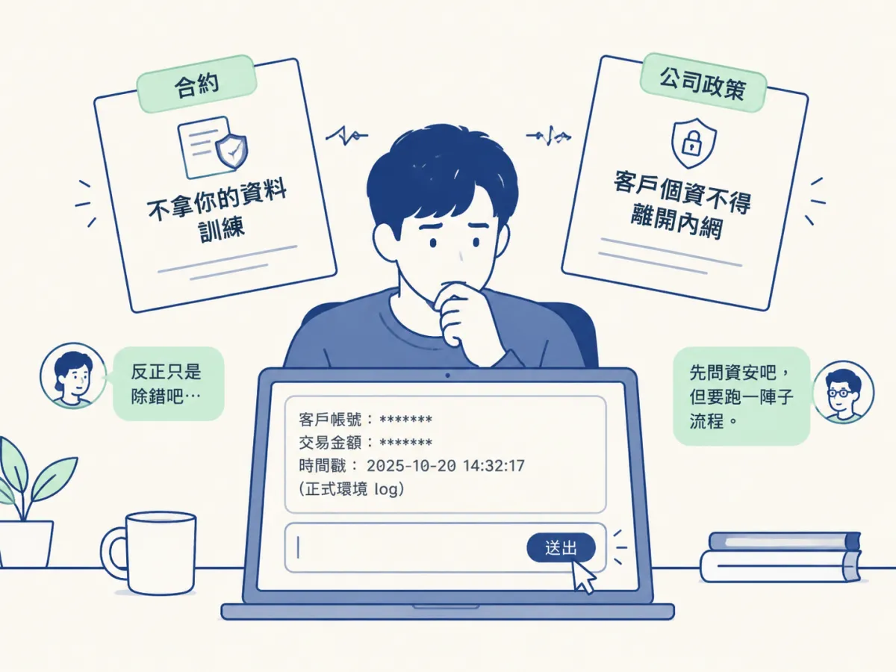
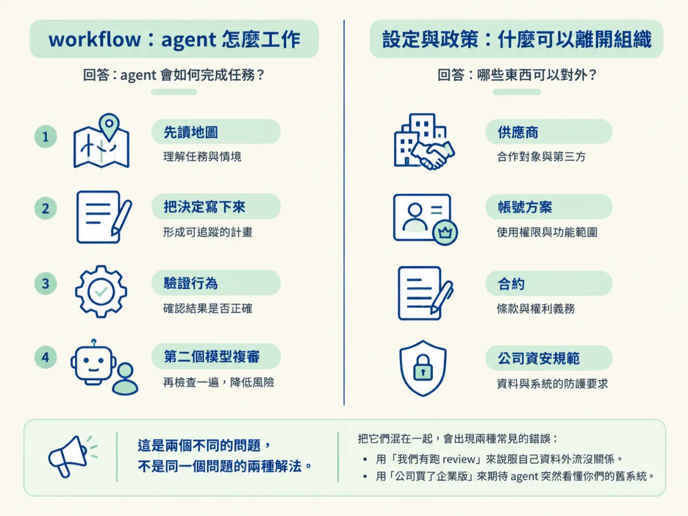
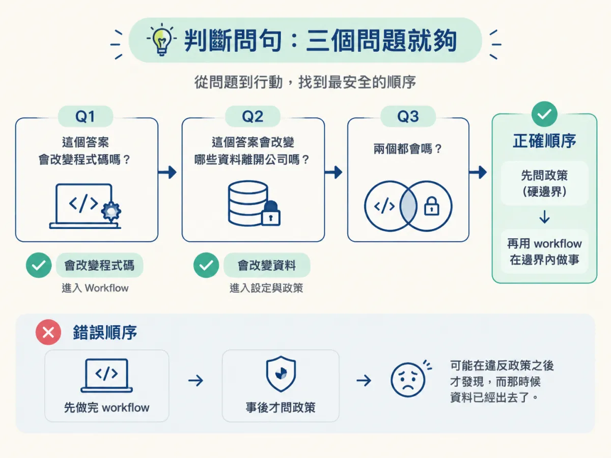
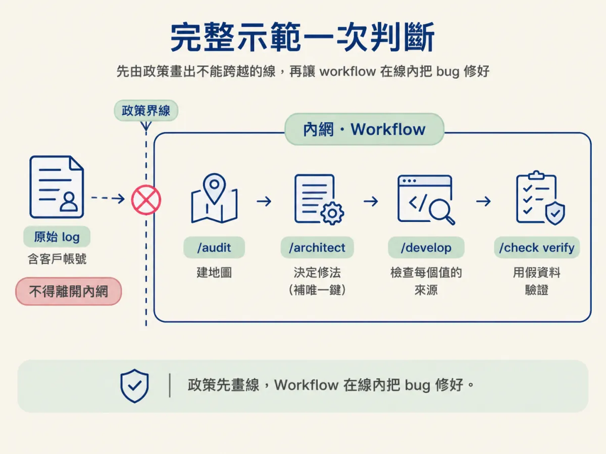

判斷一個問題該由 workflow 還是帳號設定與公司政策處理，並說出 workflow 為什麼跨不過「哪些公司資訊能讓模型看見」這條線。
你要修公司 Java 平台上一個對帳錯誤。手上有正式環境的 log，裡面有客戶帳號、交易金額、時間戳。你已經跑過 /audit，地圖也有了，/architect 也幫你把修法想清楚。現在只差一步：把那段 log 貼給 agent，讓它看著真實資料推理。
貼出去之前，你遲疑了一下。合約說這個工具不會拿你的資料訓練，但公司政策寫著客戶個資不得離開內網。團隊裡沒有人確定「貼一段 log 給 AI 看」算不算違反。有人說「反正只是除錯」，有人說「先問資安吧，但要跑一陣子流程」。

這個遲疑跟懂不懂技術無關。你碰到了一個不屬於 workflow 管轄的問題。前面三節談的都是 agent 怎麼工作：怎麼建地圖、怎麼先理解再改、怎麼驗證。這一節要處理的是另一條線：哪些資訊可以讓模型看見，以及那條線由誰畫。
課程把這件事切成兩半，講得很清楚：
The workflow still cannot decide which company information the model is allowed to see. That depends on your provider, account settings, company policies, and security requirements.
接著補上另一半：
But this workflow controls how the agent works. Your settings control what is allowed to leave the organisation.
把它翻成兩個問題，會更容易記：
這兩層是兩個不同的問題，不是同一個問題的兩種解法。把它們混在一起，就會出現兩種常見的錯誤：用「我們有跑 review」來說服自己資料外流沒關係，或是用「公司買了企業版」來期待 agent 突然看懂你們的舊系統。

這不是 workflow 設計得不夠好，而是它的作用域就是這樣。它是一組在 repo 裡工作的 skill：讀檔案、寫檔案、跑指令、看 diff。它能看到的東西，僅限於這個 repo 和它能執行的命令。
合約不在 repo 裡。帳號方案不在 repo 裡。公司的資安規範、客戶合約裡的資料處理條款、哪個國家的資料不能出境，這些都不在。更關鍵的是，即使它全部都知道，它也攔不住你：把 log 貼進對話框的動作是你做的，不是它做的。
所以「workflow 能不能處理方向二」這個問題，沒有「等它進化」這種答案。它本來就不是為這件事設計的。就像你不會期待一把扭力扳手幫你判斷這顆螺絲該不該鎖那麼緊，那是規範與圖紙的工作。
遇到一個不確定的狀況時，依序問這三個問題：
第三個問題最容易做錯。很多人會反過來：先用 workflow 把事做完，事後才想「這樣貼不知道可不可以」。順序顛倒的代價，是你可能在違反政策之後才發現，而那時候資料已經出去了。

下面這些情境，在舊碼庫上工作遲早會遇到。表格的重點是最後一欄：判準。記住判準，比記住每一列有用。
| 情境 | 該找哪一層 | 判準 |
|---|---|---|
| agent 想刪掉一段看不懂的舊程式碼 | workflow（/audit 的地圖加 review） | 它改變程式行為，不改變資料流向 |
| agent 想自己挑一個付款供應商 | workflow（/develop 的 gate 轉 /architect） | 這是一個技術決定，答案會改變程式碼 |
| 要不要把正式環境 log 貼進對話 | 公司政策 | 它改變資料流向，不改變程式碼 |
| 供應商會不會拿你的輸入去訓練 | 帳號方案與合約 | 由合約決定，寫 prompt 改不了 |
| 公司還沒核准這個工具 | 公司政策，先問再用 | 使用授權不是 workflow 能給的 |
| 私有的定價邏輯能不能放進 prompt | 政策加供應商條款 | 它會離開組織，而 workflow 看不到合約 |
注意第一列跟第二列的差別。兩者都是 agent 的「衝動」，但一個是它想清理看不懂的東西，一個是它想替你決定一個供應商。這兩個都該由 workflow 處理，因為它們的結果都會變成程式碼。而第三列以後，不管 agent 多聰明都幫不上忙，因為問題不在它怎麼工作，而在你給它什麼。
回到前言那個對帳 bug。我們把條件列清楚，然後走一次流程。
已知條件：合約載明不會用你的資料訓練，但會保留一段時間；公司政策規定客戶個資不得離開內網；log 裡有客戶帳號與金額；你需要知道「為什麼某些交易會重複入帳」。
第一步，先套政策。 log 含客戶帳號，屬於政策禁止外出的資料。這一點沒有模糊空間，也不因為工具「不會拿去訓練」而改變。政策管的是資料能不能離開，不是離開之後被怎麼處理。所以：不能貼原始 log。
第二步，再用 workflow。 既然原始資料不能出去，就把問題換成一個不需要原始資料的版本。/audit 先建地圖，找出對帳流程的既有實作，以及它怎麼處理 idempotency（同一個請求重送不會重複成立訂單）；/architect 在讀完現況之後決定修法，例如補上一個唯一鍵；/develop 的 gate 檢查每個要產生的值有沒有來源；最後 /check verify 用假資料把流程跑一遍。
你接受了什麼代價？ 你要花時間做遮罩或假資料，重現問題的速度變慢，可能要跟客服多要幾個不含個資的案例。換來的是不違反政策，而且這個做法可以重複使用。
這個例子裡，兩層都用到，但順序很清楚：政策先畫出「不能貼原始 log」這條線，workflow 在線內把 bug 修好。如果順序反過來，先貼了再說，後面的 workflow 再完整也補不回來。

現在把場景換掉：這是你的 side project，log 裡只有你自己造的測試資料，沒有客戶、沒有合約、沒有公司政策。這時候方向二的風險幾乎消失，決策簡化成一個很技術的問題：哪個模型讀得懂這段程式、哪個比較準。
但請注意，只有方向二消失。方向一還在：agent 還是可能刪掉一段你看不懂但其實重要的程式碼，還是可能把測試用的金鑰寫進前端。所以 /check verify 跟 review 還是值得跑，只是你可以更自由地餵它完整的 context。
再換一個條件：公司政策後來改成「允許在核准的工具上處理去識別化的資料，且 DLP（資料外洩防護）會攔截未遮罩的個資」。這時候你可以貼遮罩後的 log，但「遮罩到什麼程度才算去識別化」仍然由政策定義，不是由 agent 判斷。它會覺得「我把名字拿掉了，應該可以吧」，但政策可能連裝置 ID 都算個資。
這兩個翻轉都指向同一件事：決定答案的關鍵，是「政策有沒有明確允許這一類資料」，「這個工具聽起來安不安全」不算數。
第一個混淆，是以為「企業版」等於「什麼都能貼」。企業版處理的是合約與帳號層面的一部份，它不會幫你判斷某個欄位算不算個資，也不會讓 agent 看懂你們的舊系統。
第二個混淆，是把「工具不會訓練」當成「資料沒有離開」。不會訓練，不等於不會保留、不會被存取、不會被用來支援除錯。政策管的是離開與否，這跟用途是兩件事。
第三個混淆，是覺得「反正大家都這樣做」。這正是最危險的一種，因為它讓組織失去掌握：沒有人知道哪些資料去過哪裡，出事時也無法回答。把問題交給政策，不是為了拖慢你，而是為了讓「可不可以」有一個可以查詢的答案。
workflow 管「agent 怎麼工作」：先讀地圖、把決定寫下來、驗證行為、換一個模型審查。設定與政策管「什麼可以離開組織」：供應商、帳號方案、公司規範、安全要求。判斷時問三個問題：這個答案會改變程式碼嗎（找 workflow）、會改變資料流向嗎（找政策）、兩個都會嗎（先政策再 workflow）。workflow 跨不過那條線，不是因為它不夠強，而是因為合約、帳號與資安規範根本不在它的作用域裡，而把資料貼出去的動作也不是它做的。先用政策畫出不能跨越的邊界，再讓 workflow 在邊界內把事做好，這才是「在舊碼庫上用 AI」完整的樣子。